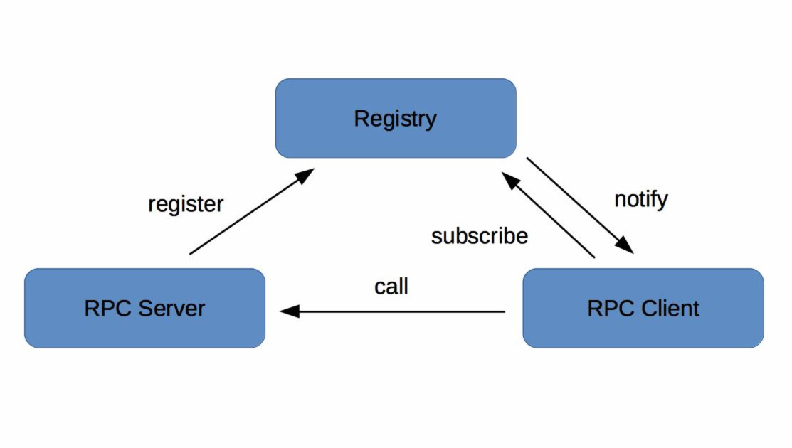
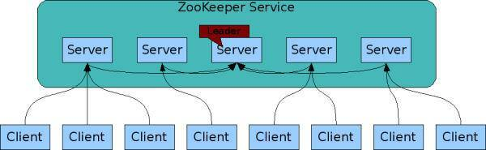
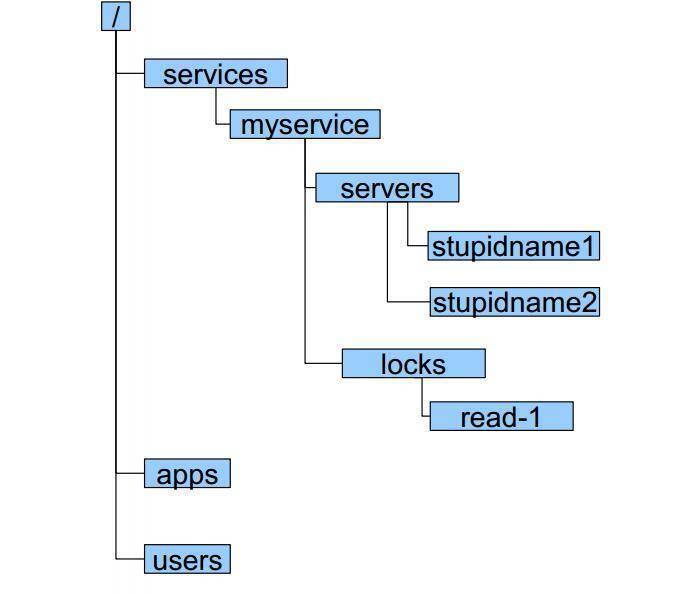

- 00 开篇词 微服务，从放弃到入门.md.html
- 01 到底什么是微服务？.md.html
- 02 从单体应用走向服务化.md.html
- 03 初探微服务架构.md.html
- 04 如何发布和引用服务？.md.html
- 05 如何注册和发现服务？.md.html
- 06 如何实现RPC远程服务调用？.md.html
- 07 如何监控微服务调用？.md.html
- 08 如何追踪微服务调用？.md.html
- 09 微服务治理的手段有哪些？.md.html
- 10 Dubbo框架里的微服务组件.md.html
- 11 服务发布和引用的实践.md.html
- 12 如何将注册中心落地？.md.html
- 13 开源服务注册中心如何选型？.md.html
- 14 开源RPC框架如何选型？.md.html
- 15 如何搭建一个可靠的监控系统？.md.html
- 16 如何搭建一套适合你的服务追踪系统？.md.html
- 17 如何识别服务节点是否存活？.md.html
- 18 如何使用负载均衡算法？.md.html
- 19 如何使用服务路由？.md.html
- 20 服务端出现故障时该如何应对？.md.html
- 21 服务调用失败时有哪些处理手段？.md.html
- 22 如何管理服务配置？.md.html
- 23 如何搭建微服务治理平台？.md.html
- 24 微服务架构该如何落地？.md.html
- 25 微服务为什么要容器化？.md.html
- 26 微服务容器化运维：镜像仓库和资源调度.md.html
- 27 微服务容器化运维：容器调度和服务编排.md.html
- 28 微服务容器化运维：微博容器运维平台DCP.md.html
- 29 微服务如何实现DevOps？.md.html
- 30 如何做好微服务容量规划？.md.html
- 31 微服务多机房部署实践.md.html
- 32 微服务混合云部署实践.md.html
- 33 下一代微服务架构Service Mesh.md.html
- 34 Istio：Service Mesh的代表产品.md.html
- 35 微博Service Mesh实践之路（上）.md.html
- 36 微博Service Mesh实践之路（下）.md.html
- 微博技术解密（上） 微博信息流是如何实现的？.md.html
- 微博技术解密（下）微博存储的那些事儿.md.html
- 结束语 微服务，从入门到精通.md.html
- 阿忠伯的特别放送 答疑解惑01.md.html
- 阿忠伯的特别放送 答疑解惑02.md.html
- 捐赠
05 如何注册和发现服务？
专栏上一期，我给你介绍了服务发布和引用常用的三种方式：RESTful API、XML配置以及IDL文件。假设你已经使用其中一种方式发布了一个服务，并且已经在一台机器上部署了服务，那我想问你个问题，如果我想调用这个服务，我该如何知道你部署的这台机器的地址呢？
这个问题就跟我想去吃肯德基一样，我可以去谷歌地图上搜索肯德基，然后谷歌地图会返回所有的肯德基店面的地址，于是我选择距离最近的一家去吃。这里面谷歌地图就扮演了一个类似注册中心的角色，收录了所有肯德基店面的地址。
同理，我想知道这台服务器的地址，那是不是可以去一个类似“谷歌地图”的地方去查呢？是的，在分布式系统里，就有一个类似的概念，不过它的名字可不是叫什么地图，而是叫注册中心。但原理和地图其实差不多，就是将部署服务的机器地址记录到注册中心，服务消费者在有需求的时候，只需要查询注册中心，输入提供的服务名，就可以得到地址，从而发起调用。
下面我来给你详细讲解下注册中心的原理和实现方式。
注册中心原理
在微服务架构下，主要有三种角色：服务提供者（RPC Server）、服务消费者（RPC Client）和服务注册中心（Registry），三者的交互关系请看下面这张图，我来简单解释一下。
RPC Server提供服务，在启动时，根据服务发布文件server.xml中的配置的信息，向Registry注册自身服务，并向Registry定期发送心跳汇报存活状态。
RPC Client调用服务，在启动时，根据服务引用文件client.xml中配置的信息，向Registry订阅服务，把Registry返回的服务节点列表缓存在本地内存中，并与RPC Sever建立连接。
当RPC Server节点发生变更时，Registry会同步变更，RPC Client感知后会刷新本地内存中缓存的服务节点列表。
RPC Client从本地缓存的服务节点列表中，基于负载均衡算法选择一台RPC Sever发起调用。

注册中心实现方式
注册中心的实现主要涉及几个问题：注册中心需要提供哪些接口，该如何部署；如何存储服务信息；如何监控服务提供者节点的存活；如果服务提供者节点有变化如何通知服务消费者，以及如何控制注册中心的访问权限。下面我来一一给你讲解。
1. 注册中心API
根据注册中心原理的描述，注册中心必须提供以下最基本的API，例如：
服务注册接口：服务提供者通过调用服务注册接口来完成服务注册。
服务反注册接口：服务提供者通过调用服务反注册接口来完成服务注销。
心跳汇报接口：服务提供者通过调用心跳汇报接口完成节点存活状态上报。
服务订阅接口：服务消费者通过调用服务订阅接口完成服务订阅，获取可用的服务提供者节点列表。
服务变更查询接口：服务消费者通过调用服务变更查询接口，获取最新的可用服务节点列表。
除此之外，为了便于管理，注册中心还必须提供一些后台管理的API，例如：
服务查询接口：查询注册中心当前注册了哪些服务信息。
服务修改接口：修改注册中心中某一服务的信息。
2. 集群部署
注册中心作为服务提供者和服务消费者之间沟通的桥梁，它的重要性不言而喻。所以注册中心一般都是采用集群部署来保证高可用性，并通过分布式一致性协议来确保集群中不同节点之间的数据保持一致。
以开源注册中心ZooKeeper为例，ZooKeeper集群中包含多个节点，服务提供者和服务消费者可以同任意一个节点通信，因为它们的数据一定是相同的，这是为什么呢？这就要从ZooKeeper的工作原理说起：
每个Server在内存中存储了一份数据，Client的读请求可以请求任意一个Server。
ZooKeeper启动时，将从实例中选举一个leader（Paxos协议）。
Leader负责处理数据更新等操作（ZAB协议）。
一个更新操作成功，当且仅当大多数Server在内存中成功修改 。
通过上面这种方式，ZooKeeper保证了高可用性以及数据一致性。

3. 目录存储
还是以ZooKeeper为例，注册中心存储服务信息一般采用层次化的目录结构：
每个目录在ZooKeeper中叫作znode，并且其有一个唯一的路径标识。
znode可以包含数据和子znode。
znode中的数据可以有多个版本，比如某一个znode下存有多个数据版本，那么查询这个路径下的数据需带上版本信息。

4. 服务健康状态检测
注册中心除了要支持最基本的服务注册和服务订阅功能以外，还必须具备对服务提供者节点的健康状态检测功能，这样才能保证注册中心里保存的服务节点都是可用的。
还是以ZooKeeper为例，它是基于ZooKeeper客户端和服务端的长连接和会话超时控制机制，来实现服务健康状态检测的。
在ZooKeeper中，客户端和服务端建立连接后，会话也随之建立，并生成一个全局唯一的Session ID。服务端和客户端维持的是一个长连接，在SESSION_TIMEOUT周期内，服务端会检测与客户端的链路是否正常，具体方式是通过客户端定时向服务端发送心跳消息（ping消息），服务器重置下次SESSION_TIMEOUT时间。如果超过SESSION_TIMEOUT后服务端都没有收到客户端的心跳消息，则服务端认为这个Session就已经结束了，ZooKeeper就会认为这个服务节点已经不可用，将会从注册中心中删除其信息。
5. 服务状态变更通知
一旦注册中心探测到有服务提供者节点新加入或者被剔除，就必须立刻通知所有订阅该服务的服务消费者，刷新本地缓存的服务节点信息，确保服务调用不会请求不可用的服务提供者节点。
继续以ZooKeeper为例，基于ZooKeeper的Watcher机制，来实现服务状态变更通知给服务消费者的。服务消费者在调用ZooKeeper的getData方法订阅服务时，还可以通过监听器Watcher的process方法获取服务的变更，然后调用getData方法来获取变更后的数据，刷新本地缓存的服务节点信息。
6. 白名单机制
在实际的微服务测试和部署时，通常包含多套环境，比如生产环境一套、测试环境一套。开发在进行业务自测、测试在进行回归测试时，一般都是用测试环境，部署的RPC Server节点注册到测试的注册中心集群。但经常会出现开发或者测试在部署时，错误的把测试环境下的服务节点注册到了线上注册中心集群，这样的话线上流量就会调用到测试环境下的RPC Server节点，可能会造成意想不到的后果。
为了防止这种情况发生，注册中心需要提供一个保护机制，你可以把注册中心想象成一个带有门禁的房间，只有拥有门禁卡的RPC Server才能进入。在实际应用中，注册中心可以提供一个白名单机制，只有添加到注册中心白名单内的RPC Server，才能够调用注册中心的注册接口，这样的话可以避免测试环境中的节点意外跑到线上环境中去。
总结
注册中心可以说是实现服务化的关键，因为服务化之后，服务提供者和服务消费者不在同一个进程中运行，实现了解耦，这就需要一个纽带去连接服务提供者和服务消费者，而注册中心就正好承担了这一角色。此外，服务提供者可以任意伸缩即增加节点或者减少节点，通过服务健康状态检测，注册中心可以保持最新的服务节点信息，并将变化通知给订阅服务的服务消费者。
注册中心一般采用分布式集群部署，来保证高可用性，并且为了实现异地多活，有的注册中心还采用多IDC部署，这就对数据一致性产生了很高的要求，这些都是注册中心在实现时必须要解决的问题。
思考题
最后请你思考一下，你觉得采用注册中心来实现服务发现与传统的DNS实现服务发现有什么不同吗？
欢迎你在留言区写下自己的思考，与我一起讨论。
© 2019 - 2023 Liangliang Lee. Powered by gin and hexo-theme-book.